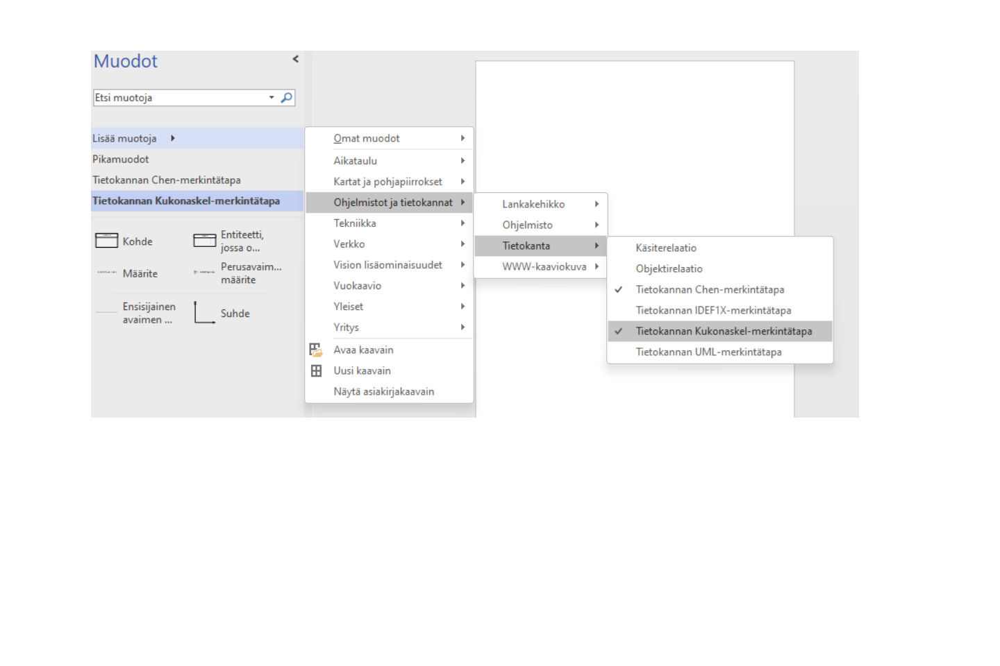
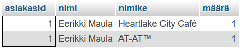

Harjoitus 1: verkkokauppa
Yleistä
Tehtävänä on suunnitella relaatiotietokanta verkkokaupalle. Voit itse valita verkkokaupan aiheen. Tietokannassa tulee säilyttää tietoja kaupan asiakkaista, tuotteista ja tilauksista. Onko kaupassa myynnissä eri tuotekategorioita? Miten saadaan tallennettua tieto tilauksen tuotteista?
Tehtävä
- Tee GitHub-repoon kansio t1_verkkokauppa
-
Suunnittele tietokanta ER-kaavion ja tietokantakaavion avulla. Lisää kaaviot mukaan
GitHub-repon kansioon. Visiossa käytä Chen-merkintätapaa ja Kukonaskel-merkintätapaa.

- Toteuta tietokanta cPanelin alle ja lisää hieman testidataa. Vie tietokanta sql-tiedostona (export) ja lisää se GitHub-repoosi.
- Tee kansioon readme.md-tiedosto johon lisäät markdown-syntaksia käyttäen lyhyen kuvauksen tietokannastasi. Lisää aliotsikko Kyselyt ja lisää ratkaisut omassa tietokannassasi alla oleviin kysymyksiin.
Kyselyt
Laadi seuraavat kyselyt phpMyAdminin avulla tietokannassasi. Lisää ratkaisut readme.md-tiedostoon.
- hae kaikki tietokantasi asiakkaat, järjestä postitoiminumeron ja nimen mukaiseen järjestykseen (SELECT, ORDER BY).
- hae kaikki tietokantasi tuotteet tuotekategorioineen, järjestä tuotekategorian ja nimen mukaan aakkosjärjestykseen (INNER JOIN).
-
hae tietokannan tietyn asiakasID:n kaikki tilaukset. Näytä asiakkaan nimi ja tilatut
tuotteet (INNER JOIN).

- hae tietyn asiakkaan tilausten määrä (COUNT)
- hae tietyn asiakkaan tilaamien tuotteiden yhteissumma (SUM)
- hae kaikkien asiakkaiden ostosten yhteishinta, ryhmittele asiakkaan nimen mukaan (GROUP BY).
- Tee yksi INSERT-kysely jossa lisäät testituotteen, nimike "TESTI SAA POISTAA".
- Tee yksi UPDATE-kysely jossa muutat tietyn asiakasID:n omaavan asiakkaan yhteystiedot.
- Tee yksi DELETE-kysely jossa poistat kaikki tuotteet joiden nimike "TESTI SAA POISTAA".